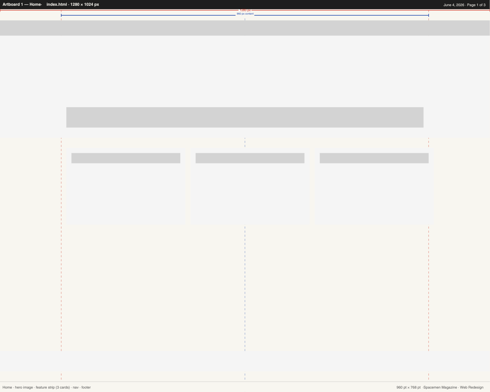
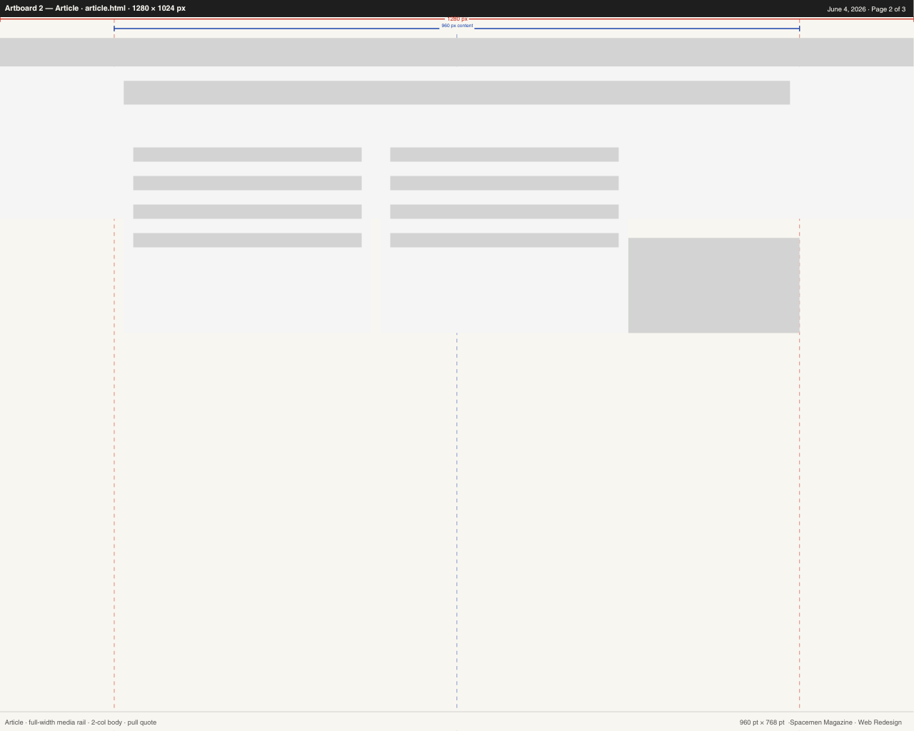
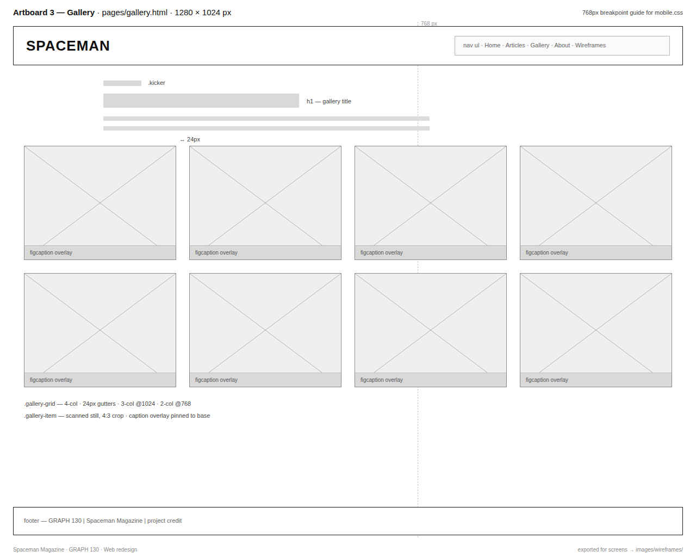
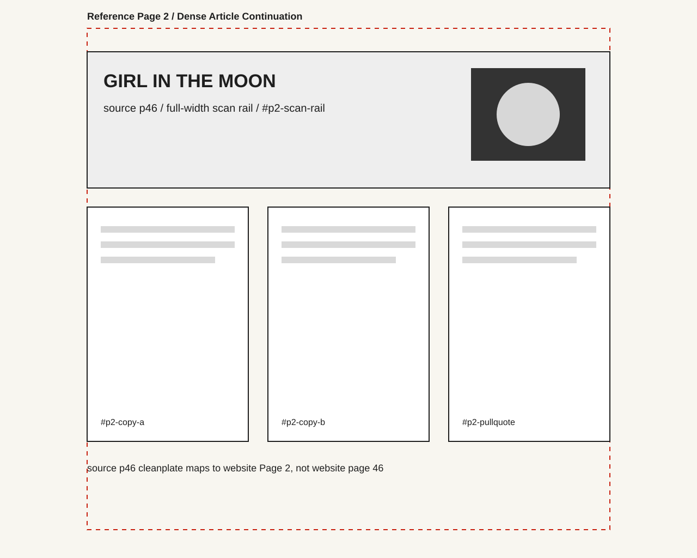
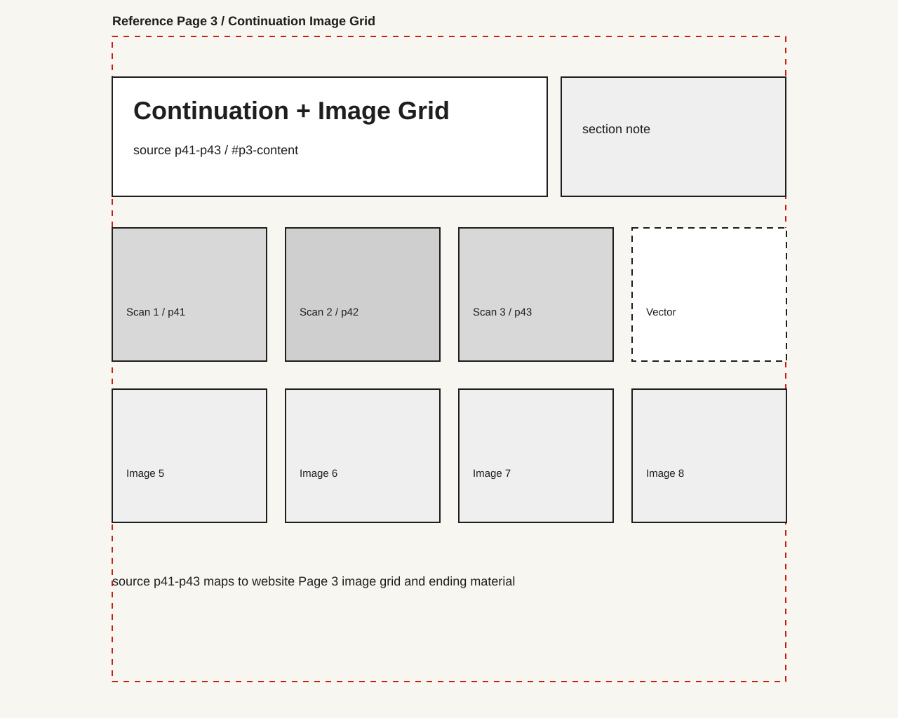

Home Wireframe
1280 x 1024 plan for the Lost Planet feature: hero image beside the headline column, two copy blocks, and a full-width pull quote.

Article Wireframe
Plan for the Girl in the Moon page: tall image area, article copy, and a bold callout band across the bottom of the grid.

Gallery Wireframe
Plan for the photo-heavy Orbituary Dept. page: image strip rows with short captions and supporting copy.

Placement Map 1
Opening article screen placement map using Lost Planet source pages 34 to 36.

Placement Map 2
Dense article continuation map using the Girl in the Moon source page 46 cleanplate.

Placement Map 3
Continuation and image grid placement map using source pages 41 to 43.
Project Information
This final project uses Spacemen magazine scans, semantic HTML, a flexbox navigation and footer, CSS Grid article layouts, and media queries at 768px and 520px for tablet and mobile.
Project by Brooke Howard for GRAPH 130.
See also the wireframe with grid measurements and tag notes.